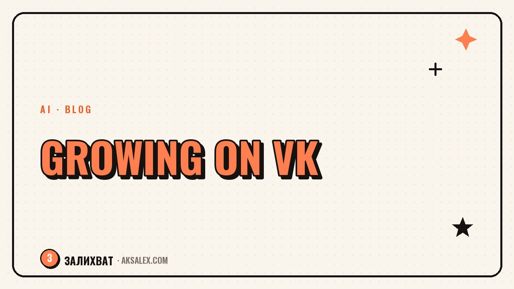

How to Grow a Blog on VK with AI

How Promotion on VK Differs from Other Platforms
On VK the text format has a longer shelf life: a detailed post with a personal story or a breakdown of a topic pulls engagement no worse than video, if it's written vividly and to the point. That also changes what AI is worth using for here - help with copy and post structure matters more than just video editing.
The second difference is communities and discussions under posts. The VK algorithm shows publications with comments noticeably more willingly, so promotion is built not only around the post itself but around the questions that prompt the audience to speak up.
Formats That Work Especially Well on VK
- A detailed story-post with personal experience
- Roundups and lists - easy to read and to reshare
- Polls and questions to the audience at the end of a post
- Carousels with several slides instead of a single image
Content Plan and Post Copy with AI
Start with a content plan 2-3 weeks ahead, not with inventing a topic from scratch every day. Give AI a list of your themes and ask it to spread them across the days of the week in different formats - that way your feed won't be monotonous, and the prep itself takes one evening instead of daily agony.
For the post copy itself, AI is handy as a draft and a structure, not as a finished final version. Give it a topic and the key points you want to get across, ask it to assemble a draft with a hooky first paragraph and a question at the end - and then rewrite the draft in your own words and add the personal details no one but you could come up with.
A common piece of advice from experienced SMM specialists: AI is good as the skeleton of a post, but what makes a text feel alive is the specifics - a name, a date, a detail you can't pull from a template.
Cover Images and Visuals for the Community
A VK community's design - the group cover, the avatar, the pinned posts - also affects whether a first-time visitor subscribes. Image-generation AI helps quickly put together several cover options without hiring a designer, especially at the start when there's no budget for visuals.
For cards and carousel posts it's handy to give AI a single style - colors, font, text placement - and then generate slides to that template. That way the feed looks cohesive and recognizable, not like a random assortment of images from different sources.
What to Do Yourself Instead of Fully Trusting AI
- The final cover choice - by feel, not just by how pretty the image is
- The logo and the community's brand colors
- Text on the cover - better written by yourself, to avoid errors and typos
Analyzing Stats and What to Do with Them
VK community stats show reach, engagement, and clicks, but the raw numbers on their own don't tell you much. AI is handy for summarizing the data over a week or a month - paste in the numbers by post and ask it to point out which topics and formats worked best and which consistently underperform.
Then compare the result with the hypothesis you made the post on - did your gut feeling match the real numbers or not. This trains your instinct for the audience faster than staring at charts without analysis, and over time the content plan starts to be built on data rather than guesswork alone.
Tools for Promoting a Blog on VK
Different promotion tasks call for different tools - here's a comparison of what each category of service solves.
| Task | Type of AI | Example service | What it gives you |
|---|---|---|---|
| Post copy | Text AI | ChatGPT, YandexGPT | Drafts and post structure |
| Covers and cards | Image generation | Kandinsky, Midjourney | Visuals without a designer |
| Content plan | Text AI | Claude, ChatGPT | Spreading topics across the days |
| Stats analysis | Text AI | ChatGPT, YandexGPT | Conclusions from the numbers over a period |
Common Mistakes When Promoting a VK Blog with AI
The most common mistake is publishing AI text without edits. Such posts are easy to spot by their smooth but impersonal style, and the VK audience, used to text posts, feels it more sharply than in formats built around short video, where the text is secondary.
The second mistake is porting a content plan from another social network without adapting it. What works well as a caption under a Reels video doesn't always work as a standalone post on VK - the format here calls for more detailed text and an explicit invitation to discuss in the comments.
Frequently Asked Questions
Where do I start growing a VK blog with AI?
Start with a content plan 2-3 weeks out in different formats - story-posts, roundups, polls. AI helps spread the topics across the days, and then you write the copy for each item in the plan.
Can I publish AI-written posts without changes?
Better not - such posts sound smooth but impersonal, and the VK audience is especially sensitive to living text. Use the AI draft as a structure and add personal details of your own.
Which AI is good for generating community covers?
For covers and cards, Kandinsky or Midjourney work well - they help quickly put together several visual options without hiring a designer. The final choice and the brand style are better left to you.
How do I know which posts actually resonate with the VK audience?
You need to regularly analyze community stats - reach, engagement, comments - and compare the result with what you expected from each post. AI helps summarize the numbers over a period and spot the patterns.
How does promotion on VK differ from promotion on other social networks?
On VK the text format lasts longer and comments under a post have a stronger effect on reach. So the content plan and copy for VK should be adapted separately, not ported over one-to-one from a short-video format.
Enjoyed this one? Here's what to read next. How to tell fatigue from burnout and what to do first, rather than quitting right away.
Read the article →not by hand